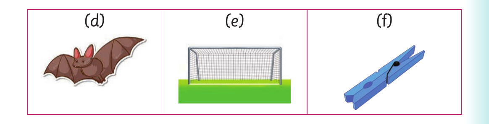

Different sounds to form new words - continued

(d), a picture of a bat. (e), a picture of a goal. (f), a picture of a peg.
3. Pronounce the first sound in each word. Then, read the words aloud. Or finger spell the first letters in each word then sign the words Example: goat-goal (a) bat-bad (b) pod-pot (c) card-cart (d) cup-cub (e) fan-fat (f) nap-nab
4. Read aloud or sign the following sentences: (a) The goat is near the goal. (b) A big, bad-looking bat hit my face. (c) The card is in the cart. (d) We met a fat boy who had a fan.